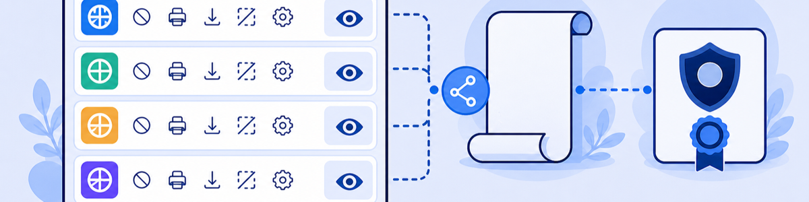

Lab 2: Managing Browser Isolation Basics
Scenario: Browser Isolation configuration involves two key steps: creating Isolation Profiles and attaching them to policies. An Isolation Profile determines the region, security controls (upload/download, clipboard, print, watermark), root certificates, cookie persistence, PAC file, and user experience. In this lab you will review the pre-configured profiles and isolation banners in the lab tenant.
Isolation Profiles are reusable templates that define HOW a user is isolated. Policies define WHEN isolation applies. Separating the two lets you reuse a single profile across many policies without duplicating security control settings.
- An Isolation Profile includes Region Selection, Security Controls, Root Certificates, Cookie Persistence, PAC File Configuration, and User Experience Settings. Why is region selection a performance consideration rather than a security one?
- Isolation Profiles created in the ZIA Admin Portal can only be referenced in ZIA policies, and profiles created in the ZPA Admin Portal can only be referenced in ZPA policies. What problem would arise if this boundary did not exist?
- Cookie Persistence controls whether cookies survive across isolation sessions. What is the security risk of enabling cookie persistence, and when might you accept that risk?
Task 2.1: Review Isolation Profiles and Isolation Banners
1 Explore Isolation Profiles
- In the ZIA Admin Portal, navigate to Administration › Browser Isolation.
- Scroll through the list of pre-configured Isolation Profiles.
- Click the eye icon next to TZTE Render Only to review its settings.
- On the Company Settings tab, note the PAC file URL and the Root Certificates applied to the isolation browser.
- Click Next to review Security settings, then Regions.
- Click Next to reach the Isolation Experience tab. Note the Isolation Banner referenced by this profile.
- Click Close.
Note: Isolation Profiles created in the ZIA Admin Portal can only be used in ZIA policies. Profiles created in the ZPA Admin Portal can only be used in ZPA Isolation Policies.
2 Review Isolation Banners
- Click the Isolation Banner tab in Administration › Browser Isolation.
- Review the configured banners: Default, Default TZTE, and TheZeroTrustExchange Up Down Block.
- Note that banners are referenced by each Isolation Profile under the Isolation Experience section.
